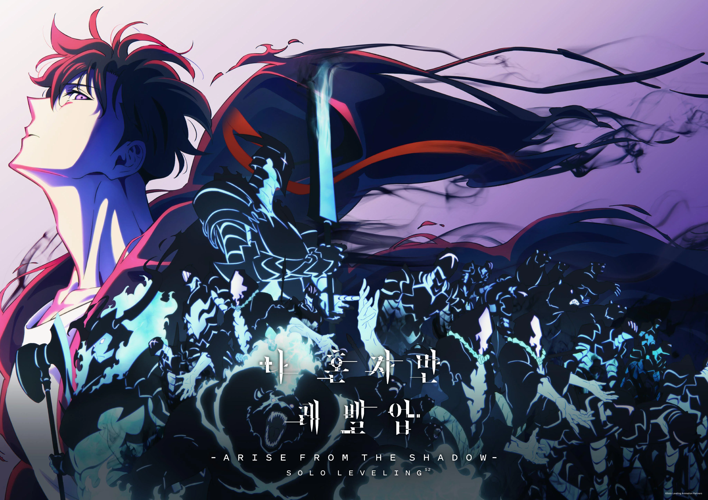

Solo Levelingé um popular manhwa coreano escrito por Chugong e ilustrado por Jang Sung-rak. A história se passa em um mundo onde portais, chamados de *dungeons*, aparecem e criaturas monstruosas **Solo Leveling** é um manhwa de ação e fantasia escrito por Chugong e ilustrado por Jang Sung-rak. A história segue **Jinwoo Sung**, um caçador de baixo nível em um mundo onde portais e monstros ameaçam a Terra. Após sobreviver a uma missão quase fatal, ele recebe uma habilidade única de *leveling*, permitindo-lhe crescer e se tornar mais forte, como se estivesse em um jogo de RPG. Com essa habilidade, Jinwoo começa a evoluir rapidamente, enfrentando inimigos cada vez mais poderosos e desafiando suas próprias limitações. A série é famosa por suas cenas de ação intensas, a evolução do protagonista e a arte de alta qualidade. Solo Leveling combina elementos de fantasia, ação e crescimento pessoal, com Jinwoo passando de um caçador fraco a um herói imensamente forte. A obra tem grande popularidade e foi adaptada para anime.